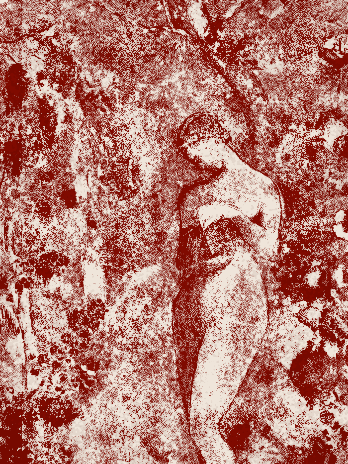
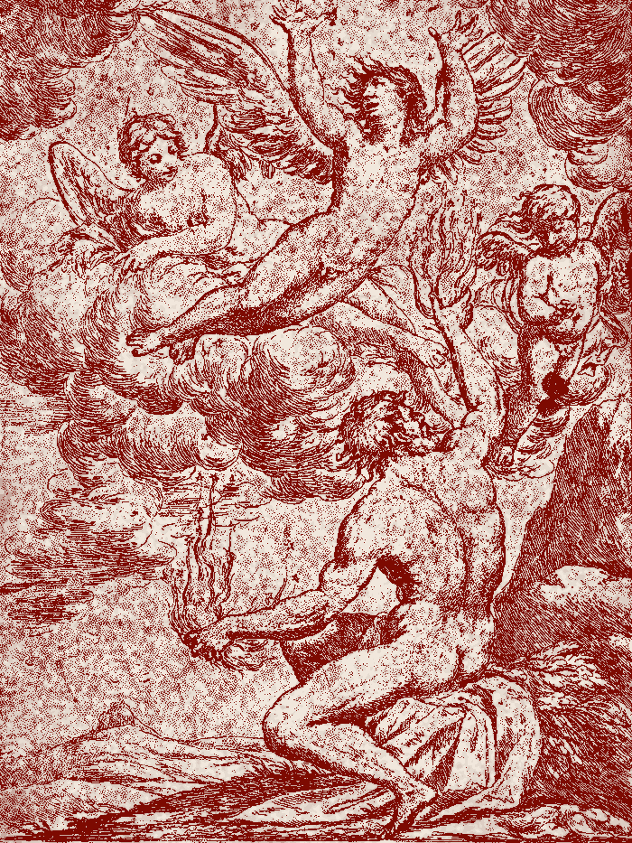
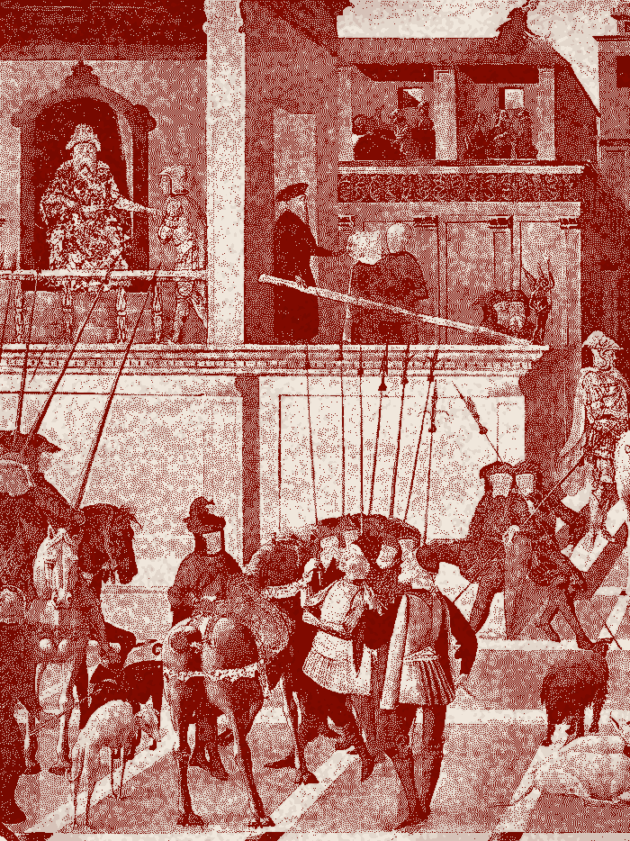

The last three.
The last distraction that doesn't eat you
The useless deep dive you feel guilty about is the last part of your attention still your own.
How to become dangerously hard to distract
The reset that lowers your baseline, and the layer that holds it.
You're renting Your taste, and You don't know the landlord.
The same force picks your jeans and empties your bank account.
Three old stories, still running.

What got out of the box
Everything that reaches you was designed to reach you. Anti Letter is about noticing who opened the box, and what you do now that it's open.

The shortcut that melts
Every course, app and system you bought promised altitude without the climb. They melt at the same height, every time. What survives is duller and slower and yours.

Ten years at sea
The interesting things are all on the far side of a crossing nobody posts about. This is the part the feed has no format for, so it's the part worth writing down.